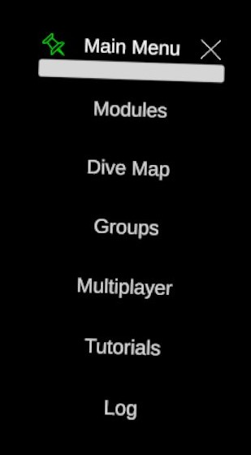

Main Menu
The main menu gives access to the other menu of the application.
You can open the main menu by pressing the start button on the left controller. Please, take a look at the controls for more information about the user inputs.
The other menus accessible are:
- Modules. The menu to add action holograms to the dive scene in order to import data, simulate models, ...
- Groups. The menu to visualize the groups that have been manually created or automatically generated.
- Multiplayer. The menu to host or join a multiplayer session for real-time collaboration.
- Tutorials. The menu to launch learning tutorials.
- Log. The menu to access the log messages (errors or trace messages are displayed here).